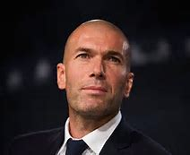
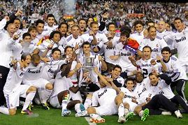
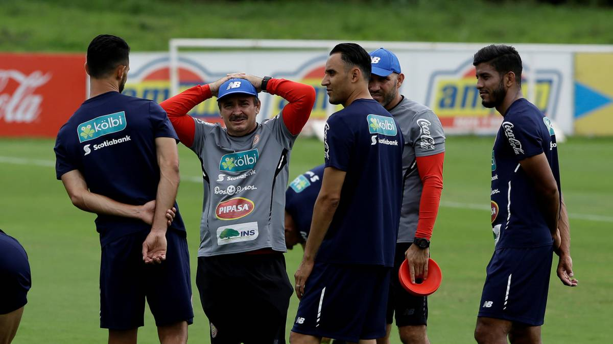

Zidane presento su reniuncia
ante los medios de comunicacion.
Por Pasión Fútbol
Zindine Zidane puso fin a una de las mejores épocas del Real Madrid desde la era de Alfredo di Stéfano.
El francés se despide del club tras dos años y medio al frente del banquillo a solo cinco
días de hacer historia con los blancos al conseguir por tercera
ocasión consecutiva la Champions League, pero, ¿cuáles fueron las razones de su partida?

El Real Madrid se corono.
Zinedine Zidane pone fin a su etapa como entrenador del Real Madrid tras de la historia del club.
El 4 de enero de 2016 se puso al frente del equipo y a lo largo de los dos años y casi cinco meses
que ha ocupado el cargo ha levantado 9 títulos como entrenador del Real Madrid:
3 Champions League, 2 Mundiales de Clubes, 2 Supercopas de Europa, 1 Liga y 1 Supercopa de España.

Keylor Navas llegó a Costa Rica para reportarse con su selección
Con la llegada del meta merengue se completó el grupo de 23 convocados
al Mundial y de 4 suplentes que estarán a disposición por algún imprevisto.
